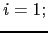
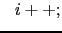
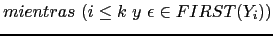
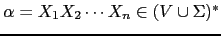
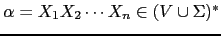
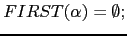

Repita el siguiente conjunto de reglas hasta que no se puedan añadir mas símbolos terminales o a ningún conjunto  :
:
|  | |||
|  | |||
|  |
Este algoritmo puede ser extendido para calcular
 para

.
El esquema es anólogo al de un símbolo individual.
para

.
El esquema es anólogo al de un símbolo individual.
Repita siguiente conjunto de reglas hasta que no se puedan añadir mas
símbolos terminales o a ningún conjunto
 :
:
|  | |||
Repetir los siguientes pasos hasta que ninguno de los conjuntos  cambie:
cambie: